Colorizing the Prokudin-Gorskii photo collection
Introduction
The goal of this assignment is to take the digitized Prokudin-Gorskii glass plate images, and using image processing techniques, automatically produce a color image with as few visual artifacts as possible. In order to do this, I extract the three color channel images, place them on top of each other, and align them so that they form a single RGB color image.
Methodology
Input: Each processed input consists of 3 glass plate images, corresponding to read, green and blue channels, as follows:| 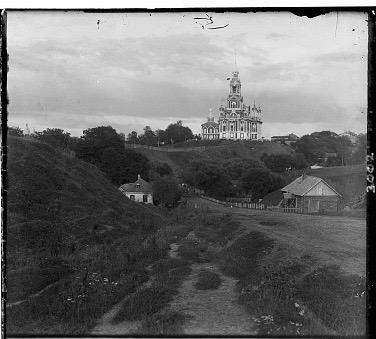 | 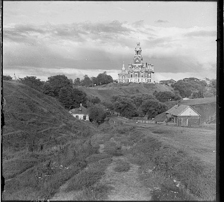 | 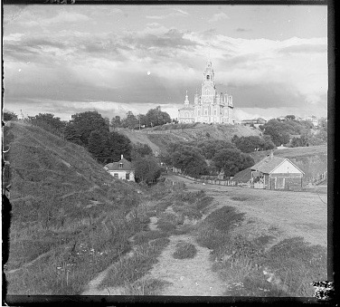 |
|---|---|---|
| Red Channel | Green Channel | Blue Channel |
L2 norm: $\|image1 - image2\|_2^2$
Normalized Cross-Correlation (NCC): ${image1 \over \|image1\|_2^2} \cdot {image2 \over \|image2\|_2^2}$
Gallery
| 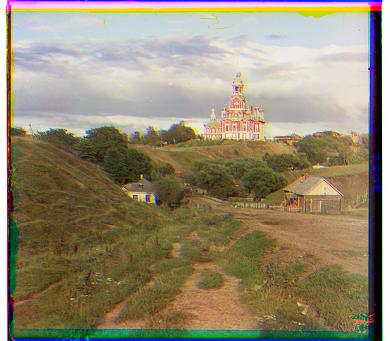 |  |
|---|---|
| Cathedral | Monastery |
 |
 |
|---|---|
| Nativity | Settlers |
Large Images
For large images, it is extremely slow and inefficient to perform the window method over a large set of displacements. Therefore we apply the pyramid method. We downscale the image, and use a small window size to align the coarse image; with that alignment, we double the scale of the image, so on and so forth. For each scale, we only use a small window; however we are moving to a more accurate alignment gradually over the scales. An image illustration is below:
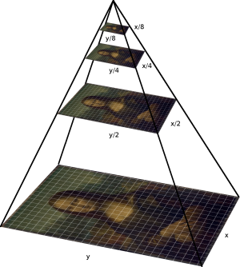
Gallery
| 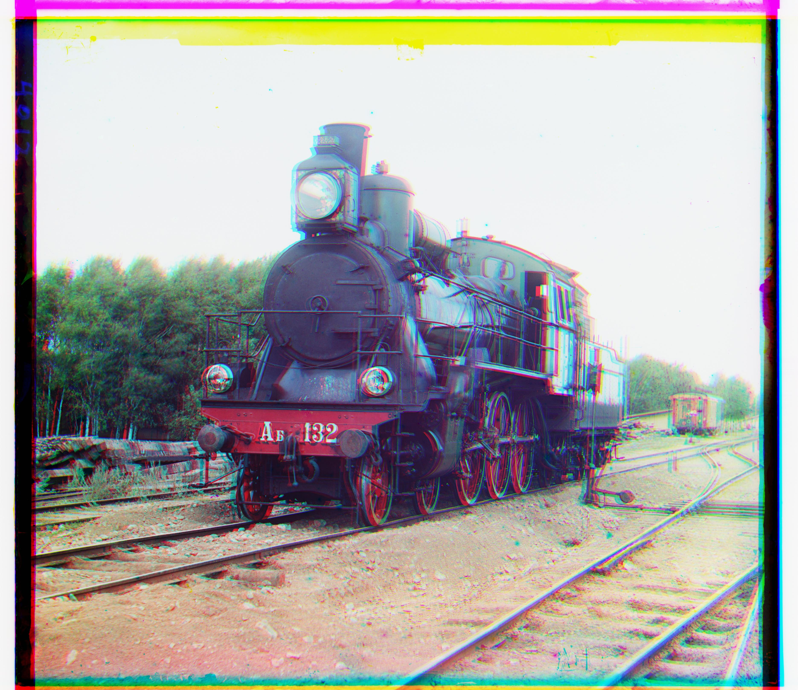 | 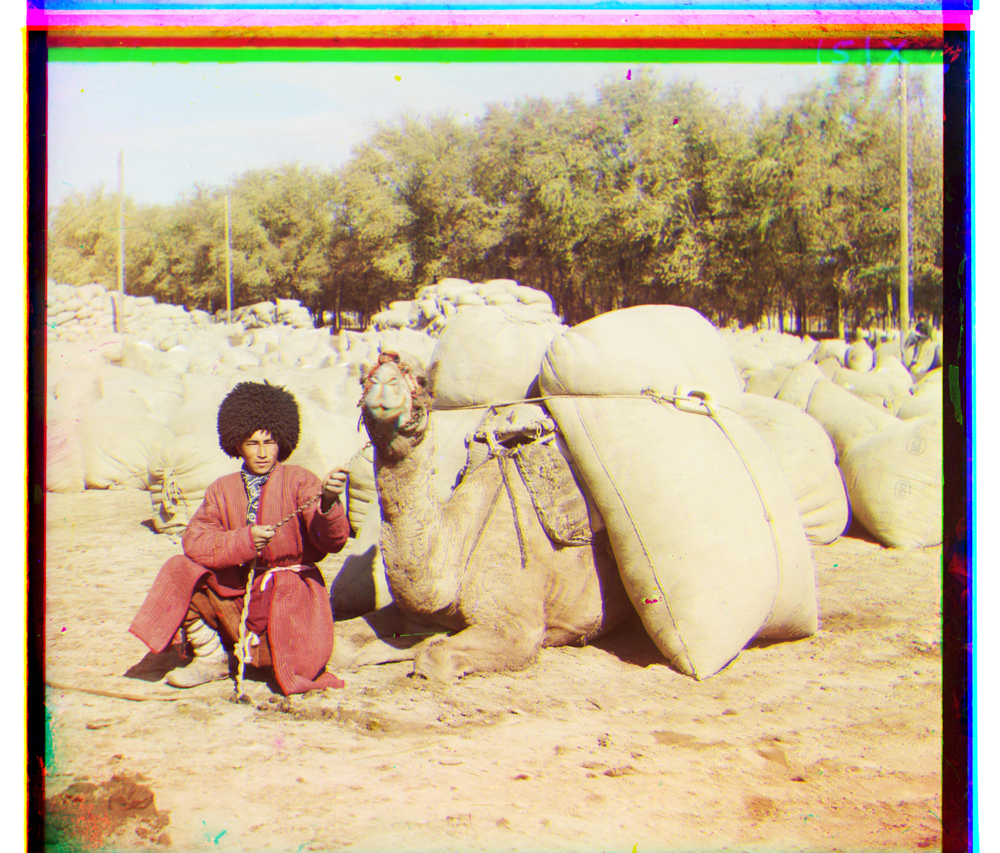 |
|---|---|
| Train | Turkman |
| 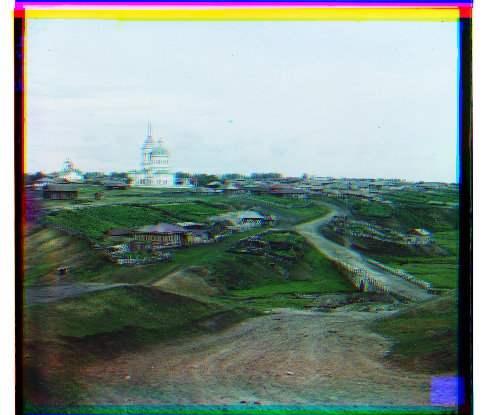 | 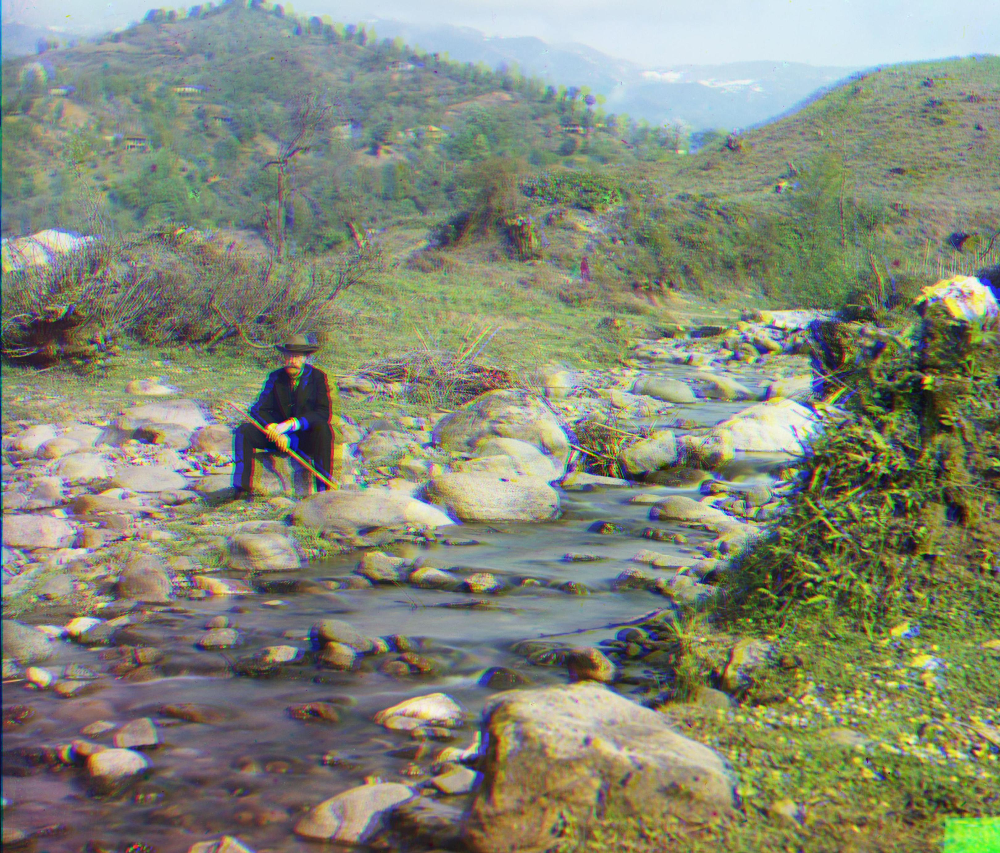 |
|---|---|
| Village | Self Portrait (Cropped) |
Advanced Features
In the case of Emir of Bukhara, the channels do not actually have the same brightness values. This posts a significant challenge, since RGB intensity does not provide a good feature. Running our naive pyramid implement would yield bad result
| 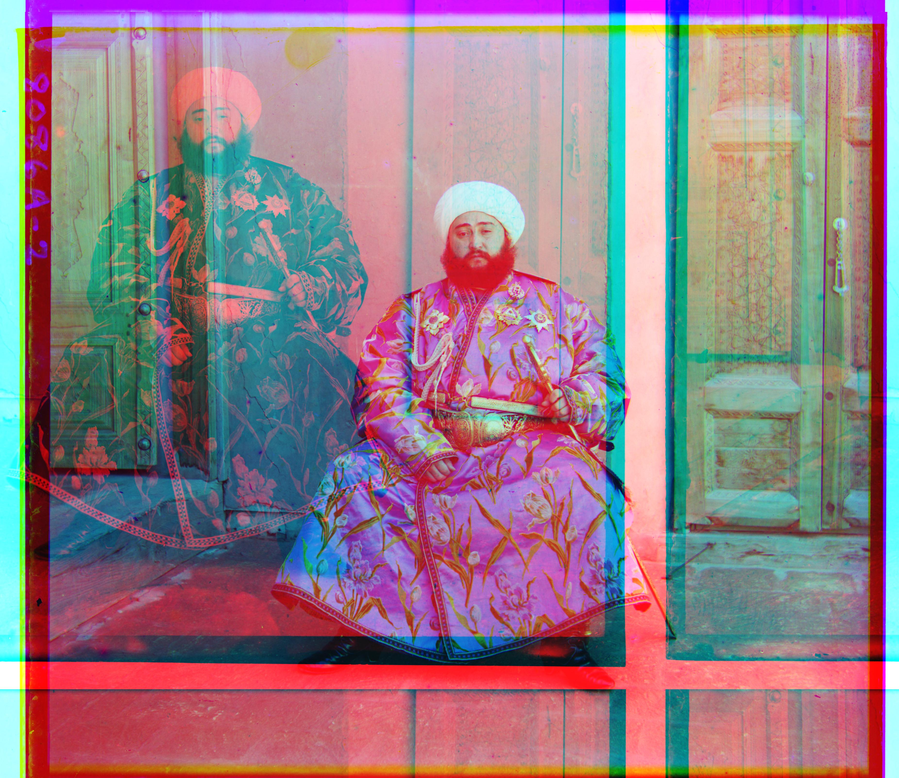 |
|---|
| Bad Emir |
Instead of looking at RGB feature, I used canny edge detector to get edge matrix for each of the channel glass. Using edge information as feature, I performed the same pyramid matching method on the edge matrices, and obtained the best displacements, and using them to align. As can be observed, now the alignment is much better.
| 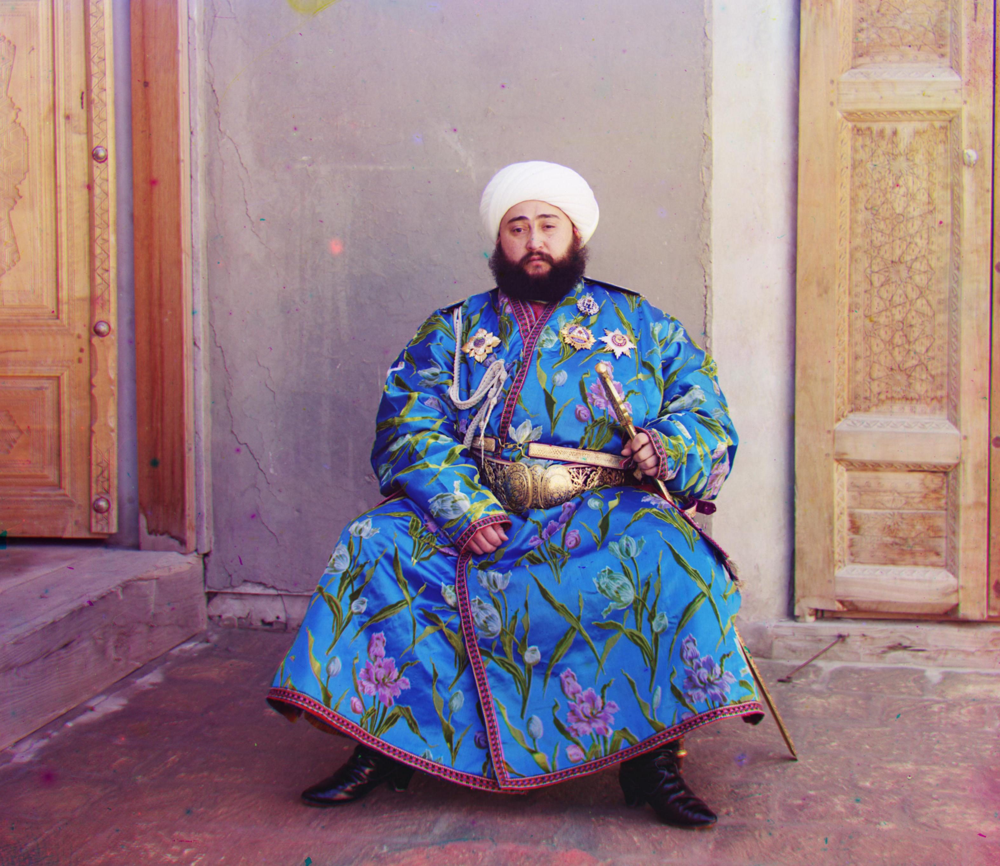 |
|---|
| Good Emir (Cropped) |
Auto Constrast
To make the color more contrasting, we look at the exposure histogram of the image, and try to make the distribution as uniform as possible.
| 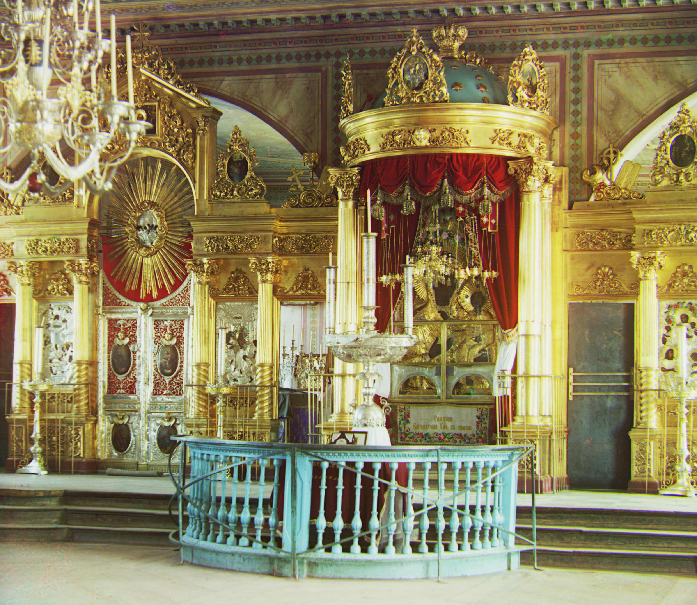 | 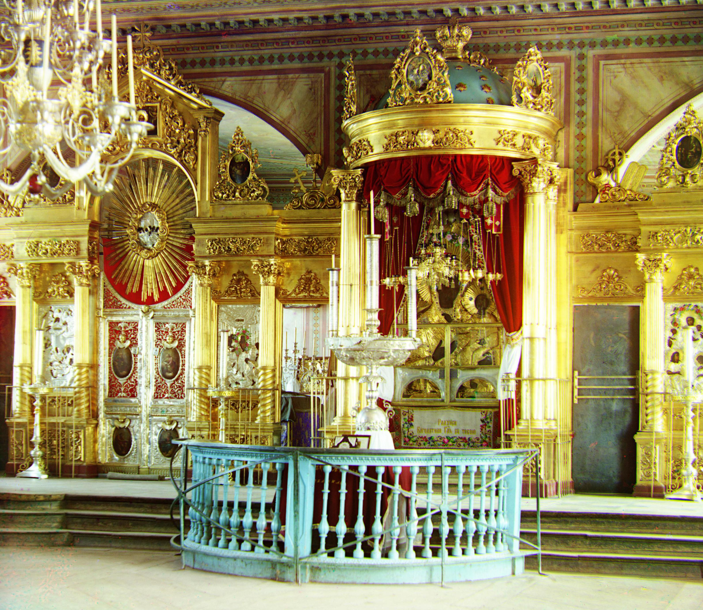 |
|---|---|
| Before | After |
| 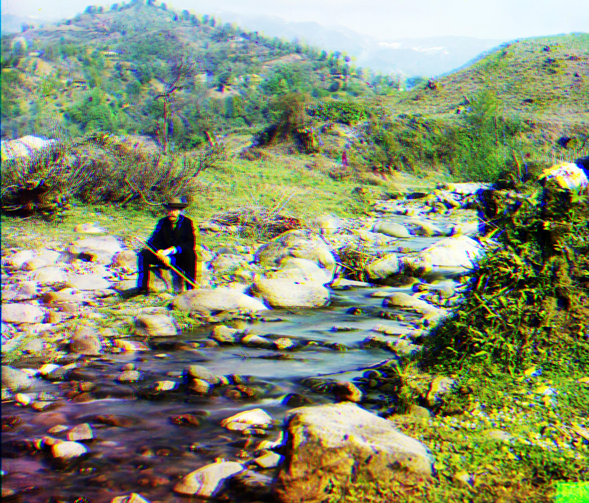 | |
|---|---|
| Before | After |
| 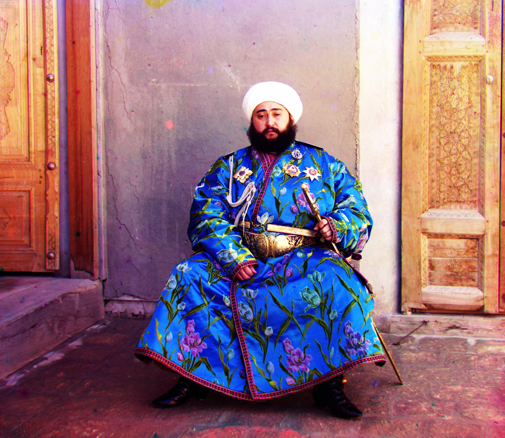 | |
|---|---|
| Before | After |